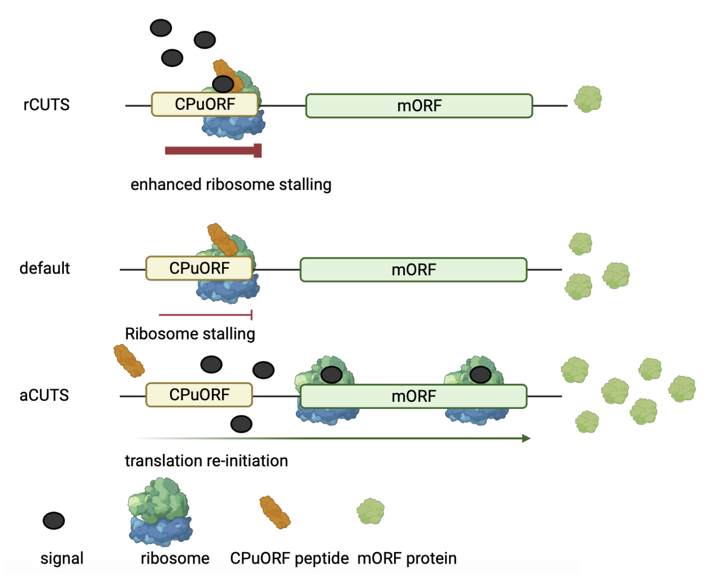
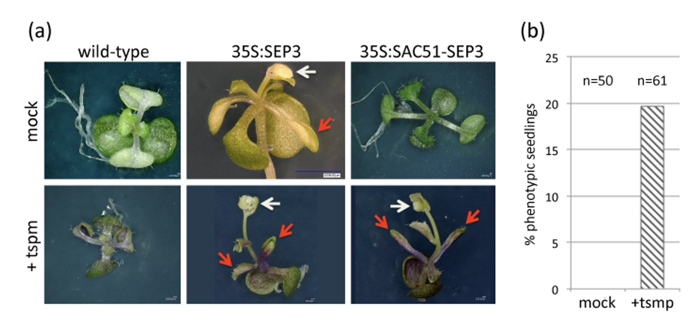

CPuORFs are a rare subset of upstream Open Reading Frames (uORFs). uORFs are translatable sequences found in the 5'leader upstream of the main Open Reading Frame (mORF). Several CPuORF nacent peptides have been shown to conditionally stall the ribosome during translation. A subset of these stall (or enhance stalling) the ribosome upon the addition of a signal. In these cases the addition of a signal results in lower expression of the downstream mORF. This mode of function has been termed repressive Conditional uORF Translational Stalling (rCUTS). On the other hand, another subset of CPuORF nascent peptides alongside a signal results in more mORF protein. This mode of function occurs because the signal disrupts the nascent CPuORF peptide's ability to stall the ribosome. Consequently, releasing the ribosome and facilitating translation re-initiation and the expression of the downstream mORF on the same mRNA. This mode of function is called activator CUTS (aCUTS) (Figure 1)
Figure 1. illustrates the CPuORF Conditional uORF Translational Stalling mechanism (CUTS). There are three modes depicted: repressive CUTS (rCUTS), in which a specific signal enhances ribosome stalling at the CPuORF, leading to low levels of downstream mORF protein; default translation, where the CPuORF stalls the ribosome without a signal; and activator CUTS (aCUTS), where a signal prevents stalling, allowing for translation re-initiation and higher levels of mORF protein.
The CUTS mechanism described regulatory peptide switches that can rapidly modulate mORF expression. Already, an Arabidpsis CPuORF found upstream of the master molecular switch mORF TBF1 (tair: AT4G36990) has been utilised in crop improvement (Xu et al., 2017. doi: 10.1038/nature22372). By cloning TBF1's pathogen responsive CPuORF upstream of a pathogen defence gene, transgenic rice demonstrated better yields and pathogen responses without fitness cost under infection. Furthermore, the Davies Lab has demonstrated that CPuORFs and can modulate the expression of an artifical mORF and alongside a specific signal modulate plant development (Figure 2).
Figure 2. The SAC51 CPuORF is able to control the phenotypic effects of constitutive SEP3 expression in a thermospermine-dependent manner.(a) Seedling phenotypes of transgenic lines constitutively expressing SEP3 (central column) or SAC51-SEP3 (right column) relative to wild-type plants (left column), with (bottom row) or without (top row) thermospermine treatment. Red arrows indicate curled/rolled leaves. White arrows indicate early, terminal flowers. Both phenotypes are typical of constitutive SEP3 expression. Note that for 35S:SAC51-SEP3 plants, this phenotype is only evident after thermospermine treatment.(b) Proportion of 35S:SAC51-SEP3 transgenic seedlings showing a typical 35S:SEP3 phenotype with or without thermospermine (tspm) treatment. Numbers of seedlings examined under each treatment are shown at the top of the chart.
The rarity and signal-specific peptide switch activity of CPuORFs hold significant potential for applications in biotechnology and agriculture. The eukaryotic CPuORF database will aid researchers by providing easy access to a repository of characterized CPuORF peptides that could be pivotal in laboratory experiments and crop improvement strategies. Such a centralized database would streamline research efforts, fostering advancements in both scientific understanding and practical applications of these unique peptides. This database currently logs the CPuORFs found in Arabidopsis thaliana, Drosophila melanogaster and Homo sapiens.